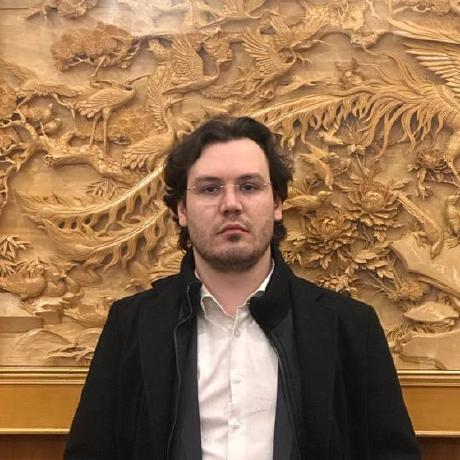

Giacomo Antonioli
PhD candidate, Department of Computer Science, University of Pisa
Email: giacomo.antonioli@phd.unipi.it
Google Scholar |
ORCID |
GitHub |
LinkedIn |
CV (PDF)
I work on quantum numerical linear algebra: how the structure of a matrix can be used to build cheaper
quantum circuits for it. My PhD at the University of Pisa (expected February 2027) is supervised by
Gianna Maria Del Corso (University of Pisa) and Roel Van Beeumen (Lawrence Berkeley National Laboratory).
Thesis: Quantum Linear Algebra: From Matrix Representations to Structured Algorithms and Computational Realization.
Research interests
- Block encodings of structured matrices (semiseparable, hierarchical low-rank / HODLR).
- Quantum algorithms for matrix functions f(A)b, linear systems and Krylov-type methods; tailored alternatives to QSVT.
- Resource-aware circuits (depth, ancillas) and quantum circuit simulation (QCLAB, QCLAB++).
- Quantum machine learning: variational circuits for state preparation and classification, quantum orthogonal neural networks.
Publications
Journal and proceedings
- G. Antonioli, P. Boito, G. M. Del Corso, M. Porcelli.
Quantum block encoding for one-pair semiseparable matrices.
Numerical Algorithms, 2026. [arXiv]
- G. Antonioli, A. Berti, G. M. Del Corso, A. Poggiali.
State vector to block encoding: an efficient quantum circuit transformation.
ICTCS 2026, CEUR Workshop Proceedings vol. 4269, pp. 376–381. [CEUR]
- G. Antonioli, A. Berti, A. Poggiali, A. Bernasconi, G. M. Del Corso.
Outlier detection and other applications of quantum matrix multiplication.
IEEE IPDPSW 2025, pp. 509–518.
- A. Poggiali, G. Antonioli, A. Berti, G. M. Del Corso, R. Guidotti.
Variational decision trees with structured ansatzes.
IEEE QCE 2025, vol. 2, pp. 428–429.
- A. Berti, G. Antonioli, A. Bernasconi, G. M. Del Corso, R. Guidotti, A. Poggiali.
Variational compression of circuits for state preparation.
IEEE QCE 2024, vol. 2, pp. 44–48. [DOI]
Preprints
- G. Antonioli, G. M. Del Corso, R. Van Beeumen.
Block encoding of semiseparable matrices via their generators. 2026. [arXiv]
- G. Antonioli, A. Bernasconi, A. Berti, G. M. Del Corso, A. Poggiali.
Two-Tower quantum matrix chain multiplication: trading qubits for depth.
2026, submitted. [arXiv]
Software
- QCLAB (MATLAB) and
QCLAB++ (C++): quantum circuit simulators.
I implemented the distributed-memory (MPI) extension of QCLAB++, proposed by R. Van Beeumen, with OpenMP and GPU support.
Talks
- Sept. 2026 — State vector to block encoding: an efficient quantum circuit transformation. ICTCS 2026, Udine, Italy.
- May 2026 — Efficient encoding of semiseparable matrices in quantum circuits. ILAS 2026, Quantum NLA minisymposium, Virginia Tech, Blacksburg, VA.
- May 2026 — Quantum spectral methods for Poisson and heat equations. ILAS 2026, Virginia Tech, Blacksburg, VA.
- Oct. 2025 — Quantum group convolutions for PDEs and equivariant neural networks. THALES Seminar on Quantum Algorithms & Computing, Paris (invited).
- Nov. 2024 — Variational compression of circuits for state preparation. AIQxQIA Workshop, Bolzano, Italy.
Research visits
- Jul.–Aug. 2025 — CEMRACS 2025, CIRM, Marseille (selected, fully funded research session).
- Apr.–Jun. 2025 — Lawrence Berkeley National Laboratory, with R. Van Beeumen.
Teaching and outreach
- Teaching assistant, Introduction to Quantum Computing (M.Sc.), University of Pisa, 2023–2025: coding labs.
- Co-supervisor of the M.Sc. thesis Widening the Bit: Extending QCLAB to Qudits and Generalizing State Preparation (2026).
- Co-organizer of the Pisa Quantum Festival (2024, 2025); organized and led the 2024 hackathon. Speaker at the Pisa Bright Night 2025.
Last updated: October 2026.